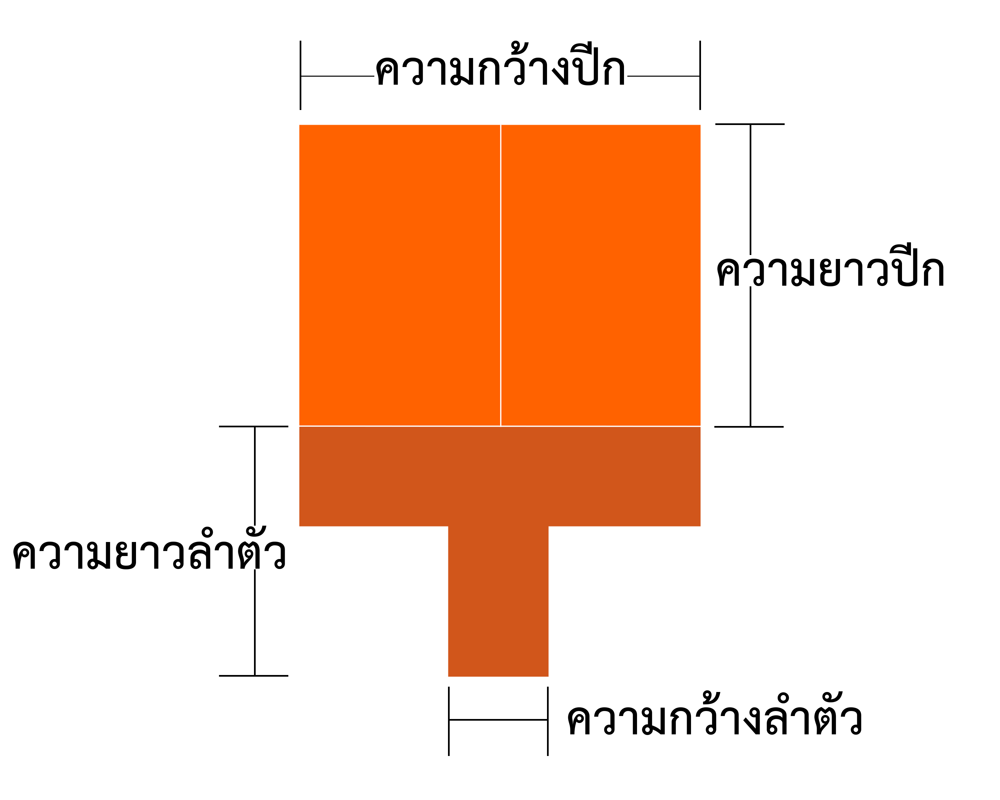

เฮลิคอปเตอร์กระดาษ คืออะไร?
เฮลิคอปเตอร์กระดาษ จริงๆแล้วคือการนำกระดาษมาดัดแปลงเป็นส่วนของใบพัดด้านบนของเฮลิคอปเตอร์เท่านั้น โดยจะมีส่วนประกอบของแต่ละส่วนเป็นดังนี้

อธิบายส่วนประกอบโดยรวมของเฮลิคอปเตอร์กระดาษ
1.ปีก(ใบพัด)
เป็นส่วนที่สำคัญส่วนหนึ่งที่จะช่วยชะลอความเร็วการตกของเฮลิคอปเตอร์กระดาษ
2.แกนของปีก(ลำตัว)
เป็นส่วนที่ต่อกับปีกทั้งสองข้าง และมีผลกับความเร็วการตกเช่นกัน
3.ศูนย์ถ่วงการตก(แทนน้ำหนักของตัวเครื่องเฮลิคอปเตอร์กระดาษ)
ศูนย์ถ่วงนี้ทางผู้พัฒนาใช้ศูนย์ถ่วงเป็นคลิปหนีบกระดาษขนาดเล็ก โดยทำการติดไว้ที่ปลายอีกด้านของแกนปีก